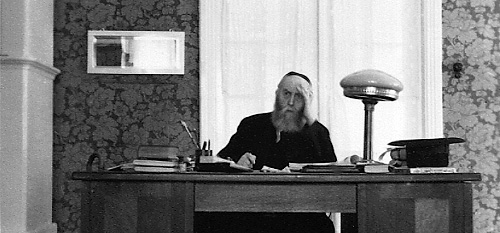

What Does It Mean to Be a Lubavitcher?
A transcript of a farbrengen by Rabbi Yossi Paltiel last year in Melbourne, Australia in honor of Yud-Beis Tammuz.
 At the Ohel of his holy father and grandfather, the Rebbe Rashab made a covenant with his young son that he would be prepared, if necessary, to sacrifice his life for the Jewish People.On a cold winter morning in Moscow, a rumor spread in town that a shipment of meat was due to arrive at one of the local butcher shops. Naturally, hundreds of people were soon in line, well before dawn, waiting several hours for this store to open its doors so that they could spend what few rubles they had to buy a couple of pounds of meat. When the doors finally opened at eight in the morning, they immediately announced that unfortunately there wouldn’t be enough meat for everybody. As a result, they declared, the Jews might as well go home now. The Jews obediently complied.
At the Ohel of his holy father and grandfather, the Rebbe Rashab made a covenant with his young son that he would be prepared, if necessary, to sacrifice his life for the Jewish People.On a cold winter morning in Moscow, a rumor spread in town that a shipment of meat was due to arrive at one of the local butcher shops. Naturally, hundreds of people were soon in line, well before dawn, waiting several hours for this store to open its doors so that they could spend what few rubles they had to buy a couple of pounds of meat. When the doors finally opened at eight in the morning, they immediately announced that unfortunately there wouldn’t be enough meat for everybody. As a result, they declared, the Jews might as well go home now. The Jews obediently complied.
People continued to wait, and the meat still hadn’t arrived. Finally, three hours later, at eleven o’clock, they announced again that when the meat would come, there wouldn’t be enough for everybody. Consequently, anyone who was not a member of the Communist Party was requested to leave the line. The afternoon came, and at two o’clock there was still no meat. As people continued to wait anxiously, there was a new announcement: Since there still wouldn’t be enough meat, all those who didn’t fight in the Great Patriotic War should go home. The line now shrank further. Then, at five o’clock, the meat was finally coming, but there wouldn’t be enough for all those who fought in the Great Patriotic War. Therefore, those who weren’t involved in the campaign to defeat the terrible Czechs were requested to please leave the line.
Now, there was only a handful of geriatrics left. Finally, at eleven o’clock at night, they were told that the meat was not coming after all. As the disgruntled old men crawled away, they said, “You know, the Jews always seem to get the best of everything…”

Tonight is Yud-Beis Tammuz, which is both the Rebbe Rayatz’s birthday and his Chag HaGeula, the day that he declared to be the Yom Tov of his redemption. When the Rebbe Rayatz was a child, he was apparently something of a prankster. R’ Dovid Shifrin, a Lubavitcher Chassid who lived in America, recalled how the Chassidim used to say, “The Rebbe [Rashab] has one son, and he’s a troublemaker.” R’ Dovid distinctly remembered how when the Rebbe Rayatz was two or three years old, he did an experiment. He took some snuff, and put it up a goat’s nose to see how it would react. It was a pathetic sight, to say the least. “How could such a child become a Rebbe?” one of the elder Chassidim asked.
Yet, R’ Dovid Shifrin used to say, “When [the Rebbe Rayatz] grew up, he became a Rebbe – and what a Rebbe!”
I had a schoolteacher, Rabbi Fuchs, who came from the Belarusian city of Dzisna. He once told me the following story: When he was a child, he had an old melamed named R’ Chaim. He was the main teacher in Dzisna, and he was a Kapuster Chassid. Kapuster Chassidus no longer exists, but it was once a branch of Chabad. At one time, Chabad had four branches, one of them being the smaller branch of Lubavitch. During the half century between the 1860’s and the First World War, Chabad was diversified into four groups. The Tzemach Tzedek’s children moved away from Lubavitch and opened up their own “outlets” of Chassidus. When he was a young man, R’ Chaim was sent by his rebbe R’ Zalman Kapuster to Lubavitch to convey a message to his first cousin, the Rebbe Rashab, the father of the Rebbe Rayatz.
The Rebbe Rayatz was then about four or five years old, and he was running around and having a great time. After R’ Chaim completed his mission in Lubavitch and gave his message to the Rebbe Rashab, he came out and saw this little boy. It was immediately clear to him that this was no ordinary child, and he asked to know who this boy was. Upon being told that this was the Rebbe’s son, he walked up to him and said, “Shalom Aleichem, I am Chaim, the melamed from Dzisna.”
Fifty years passed, the Rebbe Rayatz assumed the leadership of Chabad-Lubavitch and eventually went through the experience of his imprisonment and subsequent release. During the thirties, after leaving the Soviet Union, he frequently visited various parts of Europe, and he came to the Lithuanian capital of Vilna, not too far from Dzisna. By this time, R’ Chaim was an old man, his own rebbe had long since passed away, and he thought to himself, “Kapust may be in competition with Lubavitch, but I’m no fool. When will I have another opportunity to see a Rebbe?” He journeyed to Vilna and made an appointment to see the Rebbe Rayatz. As he entered the Rebbe’s room, the Rebbe stood up and said, “Shalom Aleichem, Chaim, the melamed from Dzisna.”
At the Rebbe Rayatz’s bris, his grandfather the Rebbe Maharash was the sandek. As is normally the case during a circumcision, the Rebbe Rayatz cried. The Rebbe Maharash looked at him and said, “Why are you crying? When you grow up, you’ll be a Rebbe, and you’ll say Chassidus clearly and lucidly.”
A PACT FOR MESIRUS NEFESH
Of all the Lubavitcher Rebbes, I think that the one whose life had the least private and personal element was the Rebbe Rayatz. The Previous Rebbe’s life was indescribably challenging. From his earliest years, his experience was one of dedication to other people, to the community. I remember that when I was a child, my father told me the following story, and it made me feel really bad for the Rebbe Rayatz.
When the Rebbe Rayatz was fifteen years old, he used to travel with his father away from Lubavitch for weeks at a time. According to the Rebbe Rayatz, the official reasons given were regarding medical purposes, but the real issue was that his father wanted to spend time with him alone. He said that the Rebbe Rashab had a ritual: Each Monday, they would leave the dacha where they were staying, travel to Lubavitch, and pay a weekly visit to the Rebbe Rashab’s mother, the Rebbetzin Rivka, to fulfill the mitzvah of kibud eim. He would make her a cup of tea, and sit and farbreng with her. Sometimes when he was away from Lubavitch, he would come home just for the weekly tea on Monday, and then return to wherever he was at the time.
One Monday morning, after the Rebbe Rayatz finished davening Shacharis, he traveled to Lubavitch with his father, and made the customary visit to see his grandmother. The Rebbe Rashab sat and chatted with her for a while, made her a cup of tea, and then they got into the wagon for the trip back to the dacha. The next day, a Tuesday, the Rebbe Rashab told his son that they were going back to Lubavitch. When the boy asked why, his father replied that since it was his fifteenth birthday, he wanted to take him on this Tuesday to the Ohel of his grandfather and great-grandfather, the Tzemach Tzedek and the Rebbe Maharash. When they arrived there, the Rebbe Rashab told his fifteen-year old son, the future Rebbe Rayatz, “I have decided that from this moment forward, you are going to be my personal secretary, my right-hand man, in all matters of community service. I have brought you here to make with you an Akeida,” similar to what Avraham Avinu did with his son, Yitzchak. Thus, at the Ohel of his holy father and grandfather, the Rebbe Rashab made a covenant with his young son that he would be prepared, if necessary, to sacrifice his life for the Jewish People.
For all intents and purposes, the Rebbe Rayatz ceased to have a private life from that moment on. He was totally involved, from head to foot, in all the tremendous suffering endured by Russian Jewry at the end of the nineteenth century and the beginning of the twentieth century. His father didn’t make a move without him. “I was reared on self-sacrifice,” the Rebbe Rayatz said later.
There’s one interesting aspect to this story: When the Rebbe Rashab was fifteen years old, his father, the Rebbe Maharash, made no such covenant with him. Similarly, the Tzemach Tzedek did not do this with the Rebbe Maharash when the latter reached this age. The Rebbe MH”M largely had a private life until the age of forty. I cannot think of another Rebbe who was essentially sacrificed upon the altar of public service and dedication to world Jewry at such an early age. It is undeniably true that the Rebbe Rayatz’s entire life was devoted to others.
THE REBBE BELONGS TO THE CHASSIDIM – AND HE WILL PREVAIL
You may recall the terribly painful affair over the Rebbe Rayatz’s s’farim. The Rebbe and the Rebbetzin Chaya Mushka were engaged in a struggle with their own sister [in-law] and nephew. We call it Didan Natzach, but for the Rebbe and the Rebbetzin, it was an incredibly agonizing and personal episode. They were involved in a very serious and intense conflict with the people closest to them. The Rebbetzin was called upon to testify in the famous court case, and was even subjected to cross-examination by the opposing side. The lawyers asked her, “What did your father own? What did he possess as personal property?”
“My father owned nothing,” the Rebbetzin replied, “tallis and t’fillin perhaps.” At the end of the deposition, she made her famous statement of, “My father belonged to the Chassidim,” he belonged to the Jewish People.
The remarkable story of the Rebbe Rayatz’s life and his tremendous self-sacrifice is indeed a tragic and painful one. It represents the story of Jewish suffering, bloodshed, and loss of identity. He had an unbreakable principle that you don’t give up. It’s not a question of winning or losing; it’s a question of not stopping. The Rebbe understood that he was fighting a losing battle, but he continued to fight it on principle.
If you read the descriptions of the story of the Rebbe Rayatz on Yud-Beis Tammuz, you get the very distinct impression that he did not expect to survive the ordeal. The end results were a total shock to him. He acted with complete self-sacrifice al Kiddush Hashem, advocating that his followers do the same. This was a time of terrible religious persecution, and he saw that his redemption was not due to the Soviets. This was a direct message from G-d: You will prevail. If not today, tomorrow; but you will prevail.
A SHORTAGE OF SIFREI TORAH IN RUSSIA?
As we stand here today, the world is certainly not a perfect place, but we now understand the story of Yud-Beis Tammuz that started nearly eighty-five years ago. Could anyone have imagined that there would come a time when there would be a shortage of Torah scrolls in Russia?
When Rabbi Hollander a”h visited the Soviet Union in 1960, someone took him into a synagogue in Leningrad and showed him a pile of hundreds of Torah scrolls, lying one on top of another in the basement. “Take them,” his companion told him. “They’ll go to waste here.”
Upon his return home to New York, Rabbi Hollander went in for yechidus with the Rebbe and told him about this discovery. “Since Eretz Yisroel has a terrible shortage of Torah scrolls, why shouldn’t we just transport them from Russia?”
“Don’t touch them,” the Rebbe replied. “There will come a time when Russia will have to import Torah scrolls.” It’s taken a while, but the Rebbe saw his victory over the Russian bear as a victory for Yiddishkait to flourish in the same place where it had once been so severely suppressed, defiled, crushed, and destroyed.
When someone becomes a Rebbe, it’s a great thing for his Chassidim. However, for the Rebbe himself, it isn’t that much fun. When the Rebbe Rashab was a little boy, before he could even speak clearly, he would say, “I don’t want to be a yebbe [sic]. There’s only one yebbe, but there are lots of Chassidim.” In other words, being a Rebbe is a rather lonely position.
When the Rebbe Rashab passed away, he left clear instructions for his son the Rebbe Rayatz in his will. In regard to the standard functions of the Rebbe in Lubavitch – strengthening the yeshiva, teaching Chassidus to the Chassidim, encouraging Chassidim to serve G-d according to the principles of Chabad, such as davening with kavana, etc. – this was his mandate and his mission. It is well known that Chabad Rebbeim never attracted very large audiences. This was not an issue for them, as they didn’t see themselves as “the Rebbes of the masses.” They wanted to be the Rebbes of the rabbanim, the mashpiim, the roshei yeshiva, the teachers, the shochtim, etc. In other words, the leaders of each shtetl traveled to Lubavitch, absorbed chassidus, came home to their communities, and shared their experience. Unlike other Chassidic sects, in Lubavitch, if there were two to three hundred people coming for Yom Tov, then that was a lot of people.
STEMMING THE TIDE
Chabad Rebbeim set a course for themselves, as based on the Alter Rebbe’s model of wisdom, understanding, and knowledge. Chabad is a much deeper and more involved form of Chassidus, and perhaps not for the faint of mind and heart. The Rebbe Rayatz sought to continue that tradition. In his personal correspondence, he wrote that he started receiving letters. A rabbi was jailed in one city, a second one ran away from his post, a third one quit, and he discovered that Judaism in Russia was in a rapid state of collapse.
“Where are the rabbanim?” he said to himself. “Where are the Jewish leaders? Where are the people whose job it is to stand up to this oppression and aggression?” The answer: They were afraid for their own lives. Thus, the Rebbe Rayatz decided “to put aside his own personal endeavors and to see what he could do to stop the tide of abandonment and resignation.” This marked the beginning of his efforts of total devotion and self-sacrifice in the Soviet Union.
In 1922-1923, he called in a few people, and sent them throughout the length and breadth of Soviet Russia on reconnaissance missions. They went to every city, and they had to report back to the Rebbe on the number of Jewish residents, functioning synagogues, regular participants in prayer services, mikvaos, chadarim, etc. One can be sure that when they returned from these missions, they didn’t have much good news to report.
There was a Chassid named R’ Simcha Gorodetzky, who spent the final years of his life in Eretz Yisroel. At this time R’ Simcha was in his late teens, a bachur in Tomchei T’mimim, when he suddenly became very ill. The doctors said that there was no chance for him to recover, giving him no more than a couple of months to live. As a result, the yeshiva told him to go home.
“Why should I go home?” he asked.
“Well, don’t you think you’d like to see your family?” they said.
“Listen, I can die here too, you know,” he replied. “I’d rather stay in the yeshiva.”
He liked the energy and vitality of Tomchei T’mimim, and while he was too weak to learn, he preferred to spend his “final days” there. Someone told all this to the Rebbe Rayatz, who immediately called R’ Simcha in for yechidus. Such sentiments represented the very essence of the Rebbe’s philosophy on life.
“Listen,” the Rebbe told him, “you’re too weak to learn and you’re not going home. I’ll make you my shliach.” R’ Simcha lived well into his eighties. Apparently, the doctors were slightly off in their life expectancy predictions.
YECHIDUS IN A FLOOD OF TEARS
R’ Simcha used to travel all over Russia on the Rebbe Rayatz’s shlichus. Once he came to a certain city, and he met with many different people. When they heard that he would be going back to see the Rebbe, they told him, “Please tell the Rebbe that I lost my job. Please tell the Rebbe that I’ve been threatened. Please tell the Rebbe that I have no work. Please tell the Rebbe that I want to give up the rabbinate because I don’t want to lose my children, etc.” There wasn’t one piece of good news.
R’ Simcha returned to Rostov, and he went to yechidus with the Rebbe Rayatz, holding this list of issues. Part of R’ Simcha’s job was to inform the Rebbe about what was happening all over Russia and to give reports on any personal requests he was asked to submit to the Rebbe. He starts reading out of his notebook, and the Rebbe suddenly begins to shed a torrent of tears, sobbing uncontrollably. After the Rebbe Rayatz calmed down, he heard the next sorrowful account, and the crying and sobbing started all over again. After this uncomfortable scene repeated itself three or four times, R’ Simcha started backing out of the room. This was a very difficult thing to watch, and he simply couldn’t stand it any longer.
“Where are you going?” the Rebbe Rayatz asked him. “People are expecting you to deliver messages. Deliver every single one of them.” He stood in the Rebbe’s room for six hours, as the Rebbe essentially cried his way through the night. As he walked out of yechidus, he meets the Rebbe’s mother, the Rebbetzin Shterna Sara. She took one look at R’ Simcha’s shell-shocked appearance and asked him what happened. After he gave her the details of the entire episode, the Rebbetzin said, “I don’t know what’s happened to him. I gave birth to him, I raised him, but I don’t recognize him anymore. Every night after yechidus, there’s a puddle of tears on the floor…”
JEWISH EDUCATION – ABOVE ALL ELSE
Then, the Rebbe Rayatz began to act, and he was a big-time operator. He sent his people to all sorts of places and began to fill in the gaps. If one person was removed somewhere, he sent another one to take his place. For a period of a few years (1923-1927), the organization was incredible. There were hundreds of shluchim all over the U.S.S.R. making certain that Yiddishkait wouldn’t die. One of the most amazing stories was when the Rebbe Rayatz happened to meet a very high-ranking Communist Party official on a train. The official told the Rebbe that he had an elderly father whom he loved very much, yet whenever he offered money to his father, the latter refused to take it because he considered his son to be a heretic. The Rebbe wrote later that he knew this official’s father, as he was one of the teachers in the underground yeshiva that the Rebbe was supporting.
The Rebbe’s efforts were unbelievably effective. It wasn’t just his self-sacrifice; he literally created an entire underground network, funded through his connections in the United States. The Joint Distributing Committee had a permanent representative in Moscow, a Dr. Rosen, whose code name was ‘Shoshanna.’ The Rebbe would go to him and clandestinely receive considerable funds for outreach activities. He once came to Dr. Rosen and said, “I need $40,000 (a staggering sum of money in those days) for the next six months.” When Dr. Rosen told the Rebbe that he could only give him $20,000, the Rebbe replied, “I can’t even take $39,999, because that would be one dollar less than we need.” That was the nature of the negotiations.
The Russians couldn’t understand all this, because they had done so much to destroy everything Jewish. The truth is that it didn’t bother the Communists if old people went to daven in shul; the main issue was the children. They realized that as long as there were no children in the synagogues, the Jewish nation r”l would cease to exist. For his part, the Rebbe understood that the most emphatic answer to the Soviet challenge was educating Jewish children. It became a war of principles. The Rebbe raised himself and his Chassidim to a level of preparedness for self-sacrifice Al Kiddush Hashem. There can be no other explanation.
While Judaism believes in life, it also believes in principle. In the famous Gemara about Rabbi Akiva teaching Torah to children during a time when such conduct meant certain death, his disciples asked him: on the basis of what authority does he permit himself to do this? Even self-sacrifice Al Kiddush Hashem has its limits; teaching children Torah is not something that demands of one to risk his very life. Rabbi Akiva replied with the metaphor of the fox and the fish: As long as the fish are in the water, they stand a chance for survival. If the fish leave the safety of the water, regardless of whether they’re being pursued or not, they have no hope. In short, Jews without Torah aren’t Jews; there’s no point in staying alive without living, and as a result of adhering to this principle, Rabbi Akiva paid the ultimate price.
Yet, we learn in Torah sources that the question was raised: Was Rabbi Akiva’s act halachically valid? One of the answers brought was that Rabbi Akiva was allowed to do this, but not anyone else. Rabbi Akiva was a Torah giant, a leader among the Jewish People. He knew the type of moment that warranted self-sacrifice al Kiddush Hashem, and the Rebbe Rayatz duplicated this accomplishment. This was mesiras nefesh in the truest sense of the word. Fight for Yiddishkait until you can fight no longer.
PRESERVING THE EMBERS
The Rebbe called in nine of his students from Tomchei T’mimim to make a minyan, and he then took out a Torah scroll. He told each of these bachurim to place his hand on the scroll and swear that they would fight to preserve the embers of Judaism in Russia until the last drop of blood. Such was the mood, the environment, the spirit in their world at that time. The Rebbe led by example; he didn’t hide. He put himself out there at tremendous risk.
One of the issues that the Rebbe Rayatz fought for with the greatest passion was “Don’t send your children to the treife schools.” The Soviet Union may have been an evil empire, but it wasn’t a stupid one. It was brilliantly orchestrated and designed. The Bolshevik Revolution succeeded because almost half a century of careful planning went into its eventual triumph. The people at the helm may not have been nice guys, but no one would accuse them of being fools. They understood that the preservation of the state depended upon the indoctrination of the young. They invested everything in their schools.
When I was on a train in the Soviet Union in the late eighties, I met a couple. The husband was a physician, and the wife was a kindergarten teacher. Yet, she earned more than he did, because the Communists knew that the school institution was the vehicle to sustain their regime. The government created the most powerful level of mind control – the education of children. As a result, one of the most significant parts of this process of indoctrination was the total ridicule and discrediting of religion, G-d, Torah and mitzvos. For this reason, the Rebbe Rayatz pleaded, “Don’t send your children to the treife schools.”
However, this was no simple task. According to the law in the U.S.S.R., if you didn’t enroll your children in their schools, they would arrest you and put you in jail, your children would be sent to orphanages, and you would never see them again. So what exactly was the point? The Rebbe Rayatz said, “Principle. Don’t think about the consequences. Just don’t do it.” The self-sacrifice that the Rebbe demonstrated, which was then duplicated by his Chassidim, was literally unimaginable.
I had a great-grandfather, a Chassid named R’ Yisroel Nevler, who had the privilege of sitting in Soviet prisons, as did many of his contemporaries. He had a most interesting custom: He would stand up against a wall on Yom Kippur and daven nonstop for twenty-four hours, something that demanded incredible physical and spiritual strength. He had three Gentile cellmates, and when they saw this, they were absolutely overwhelmed. “Tomorrow you’re getting out of jail,” they told him. “Anyone who can pray to G-d for twenty-hours straight in a cell is not staying here.” And that’s exactly what happened. The very next day, the prison officials came and released him.
When he arrived back home to the surprise of everyone, he entered the house and saw a school knapsack. When he asked for an explanation, his wife, my great-grandmother, told him that they had sent several of the girls to the secular school. “I’m going back to jail this minute,” R’ Yisroel replied. The girls never went back to that school again. This is the kind of life the Rebbe Rayatz inspired his Chassidim to live, and as we all know, many of them paid the ultimate price.
DON’T STOP TEACHING THE CHILDREN!
We’re talking about this story now nearly a century later. Yet, what’s interesting is that regarding many of the descendants of those Chassidim who lost all connection to their Judaism because their father or grandfather had been executed, the self-sacrifice reappears two or three generations later. I have cousins, the offspring of my paternal grandfather’s nephews, who had been murdered in the thirties at Stalin’s orders, and they are now coming back to Yiddishkait.
Self-sacrifice Al Kiddush Hashem appears at times to be an incredible waste, an absolute tragedy. However, as difficult as this is for us to fathom, it’s a part of our religion. There’s a time and a place for it. It seems totally ridiculous and useless for people to live at such a level of mesirus nefesh, especially when there’s no obligation to do so according to Halacha. Yet, there is a time to have self-sacrifice Al Kiddush Hashem, and the era of the Soviet Union was such a time.
When the Rebbe Rayatz made farbrengens, instead of discussing Chassidus, he would often speak about the Marranos. There was a famous occasion during the Purim farbrengen before his arrest, when he tore open his shirt, pointed to his bare chest, and said, “When you see this body burning, don’t stop teaching the children!” Finally, they arrested him, because they came to the understanding that he must be stopped.
This couldn’t be grasped rationally. The Soviet Union was a nation of hundreds of millions of people, and the Rebbe Rayatz was involved with perhaps tens of thousands of Jews. While this is a considerable number, how terrible could that have been? Yet, when you went into Soviet law enforcement offices, there were two photographs on the wall under the heading “The Enemies of the Communist state.” They were Leon Trotsky, Stalin’s chief political nemesis, and the Lubavitcher Rebbe.
The only explanation was spiritual in nature: They believed that as long as the Rebbe was around, maintaining his fierce opposition, continuing to fighting on whether he succeeded on a large scale or not, he was the arch-enemy of the Soviet system. They feared that his counter-revolution would threaten everything achieved by the Bolshevik Revolution…
[To be continued iy”H]
Rabbi Yossi Paltiel. "What Does It Mean to Be a Lubavitcher?." Beis Moshiach, no. 839 (June 29, 2012).